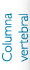

Tratamiento con líquido sinovial
Actualmente la aplicación de liquido sinovial, mismo que se obtiene a través de un proceso de ingeniería de un componente del ganado equino (producto norteamericano con todas las normas de seguridad) tiene una gran aceptación en los padecimientos degenerativos de las articulaciones (osteoartrosis) en pacientes adultos mayores, dada la mejoría que se observa en poco tiempo, con relación al dolor y la rigidez , además la comodidad de ser un procedimiento de que consultorio que se aplica con anestesia local sin reacciones adversas hasta la fecha, así mismo, en pacientes jóvenes involucrados al deporte cobra gran entusiasmo día con día, derivado de la protección que brinda al cartílago articular y que favorece su adecuado funcionamiento (recuerde que este tejido es el amortiguador de las articulaciones de carga como rodilla y tobillos), así mismo, la sensación de ligereza se percibe desde la tercer semana creando en el atleta mayor capacidad de movilidad al tener un lubricante que beneficia en el deslizamiento, por otra parte, es indispensable pensar en esto, si usted a sufrido de alguna lesión que haya sido necesario inmovilizarle por más de 3 semanas (por el uso de férulas o yesos completos), ya que al dejar de usar la articulación, esta sufre una atrofia debilitando la resistencia y corriendo el riesgo de poder desarrollar un desgaste prematuro que a la larga le ocasionara dolor y rigidez..
*Así es que no lo piense más, recuerde, su articulación merece la protección y lubricación al menos una vez al año.